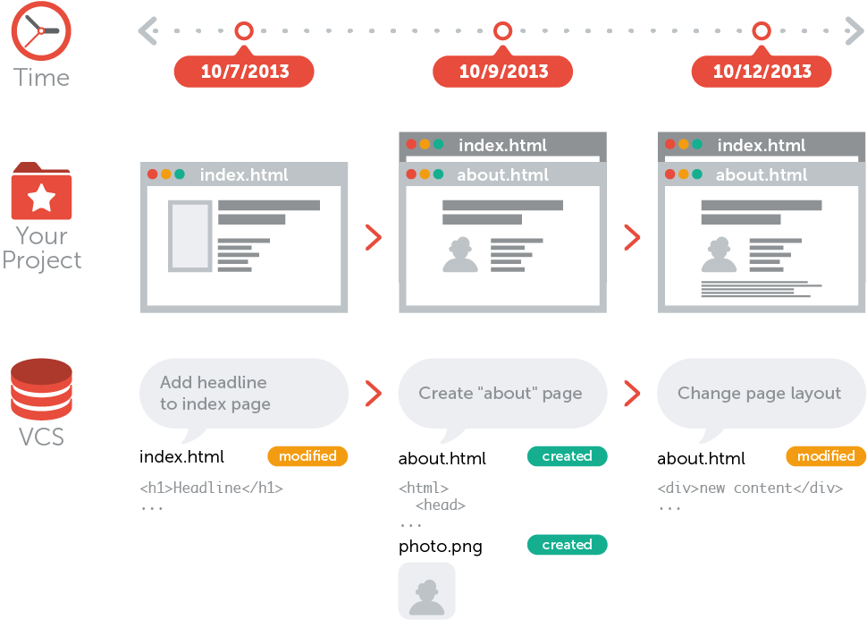
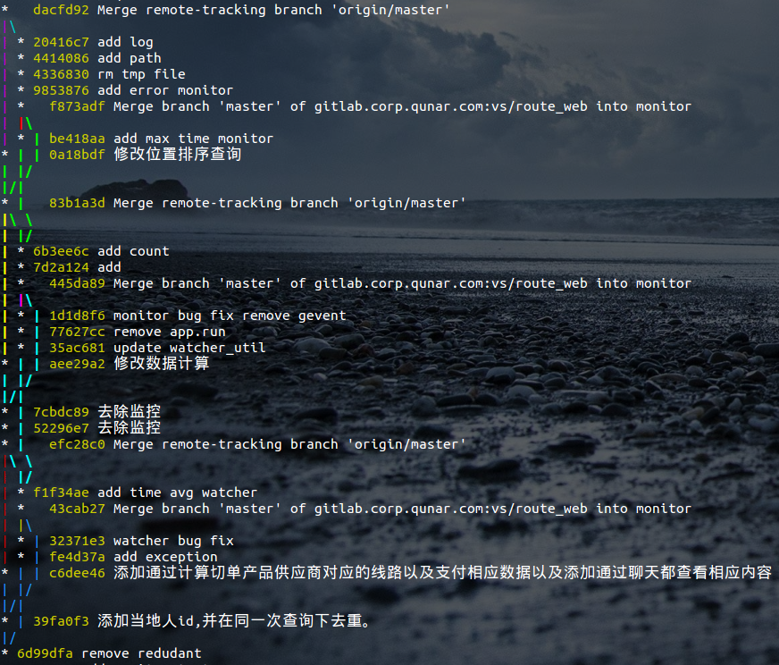

Git
A Distributed Revision Control System
杨阳
度假事业部搜索与频道
What is Version Control?
集中式版本控制

分布式版本控制

What is Git


Git VS SVN
Git保存的是快照，SVN保存的是文件的变化.
Git几乎所有的操作都可以在本地完成，SVN需要与服务器通讯以获得老版本的文件．
Git对文件内容使用SHA-1 hash生成提交版本号，可以保证文件内容的完整性，而SVN使用递增的编号作为版本号．
Git工作流
git的三种状态
| 已修改(modified) | → | 工作区 |
| ↓add | ↓ | |
| 已暂存(staged) | → | 暂存区 |
| ↓commit | ↓ | |
| 已提交(commited) | → | 本地仓库 |
| fetch↑↓push | ||
| 远程仓库 |
git的三个区域

分支开发
一般开发流程
创建仓库/从远程仓库复制
创建特性分支
创建/修改文件
工作区提交文件到暂存区
暂存区提交文件到本地仓库
切换到主分支
合并特性分支到主干分支
推送本地仓库到远程仓库
Git常用命令
| Basic | init | clone | status | log | reflog | remote | config |
| File | fetch | pull | add | commit | push | rm | stash |
| Branch | branch | checkout | merge | diff | reset | revert |
git init
创建一个空的本地仓库或者重新初始化一个已经存在的仓库git clone
克隆远程仓库到一个新的目录
git status
显示工作区域的状态
git log
记录提交日志
git reflog
记录所有分支的所有操作
git remote
管理相关的远程仓库
git config
修改Git配置文件
git fetch
拉取远程仓库到本地仓库
merge
合并分支
git pull
拉取远程仓库到本地仓库并合并到本地分支(git fetch + git merge)
diff
显示不同提交，不同工作区域，不同分支之间的差别
git add
工作区提交到暂存区
git commit
暂存区提交到本地仓库
git push
将本地仓库的内容推送到远程仓库
git rm
将文件从暂存区或者工作区中移除(--cached)
git stash
暂存工作区内容并清理工作区
branch
管理分支
checkout
检出分支或撤销文件
reset
重置HEAD到指定的状态
revert
撤销一些已经存在的提交
Fragments
Hit the next arrow...
... to step through ...
... a fragmented slide.
Fragment Styles
There's different types of fragments, like:
grow
shrink
fade-out
current-visible
highlight-red
highlight-blue